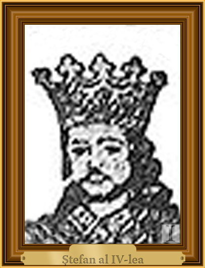

Ștefăniță Vodă
Ștefăniță Vodă cel Tânăr sau Ștefan al IV-lea (n. 1506 – d. 14 ianuarie 1527, Hotin) a fost domn al Moldovei între 20 aprilie 1517 și 14 ianuarie 1527. Este fiul lui Bogdan al III-lea și nepotul lui Ștefan cel Mare.
Domnie
Data nașterii este plasată de diverse surse la 1503, 1506 sau 1508.
Fiind minor la urcarea pe tron țara era condusă inițial de Divan, în fruntea căruia se afla hatmanul Luca Arbore.
La 1518, Ștefăniță încheie un tratat cu polonezii. În același an, tătarii intră în Moldova, dar sunt înfrânți de vornicul Țării de Jos Petrea Cărăbățul la 8 August 1518, care primește ajutor și de la polonezi. Lupta a avut loc la Ciuhru, lângă târgul Șerbanca la Prut.
În 1522 Ștefăniță preia frâiele domniei iar în 1523+ îi ucide pe hatman și pe cei doi fii ai săi, acuzându-i de trădare. Boierii se răscoală împotriva lui Ștefăniță, însă răscoala a fost înnăbușită și mulți boieri au fost uciși.
În același an Ștefăniță atacă și înfrânge o armata turcească care se întorcea dintr-o expediție de jaf în Polonia și ia o prada bogată.
Moare la Hotin pe 14 ianuarie 1527 și este înmormântat la Mănăstirea Putna, o sursă sugerând că a fost otrăvit de doamna Stanca.
Viața lui Ștefăniță a fost sursa de inspirație pentru piesa Viforul, scrisă de Barbu Ștefănescu Delavrancea. Și George Coșbuc se ocupă critic în poemul său Ștefăniță-Vodă din volumul Fire de tort, editat în 1896, cu el.
|

|